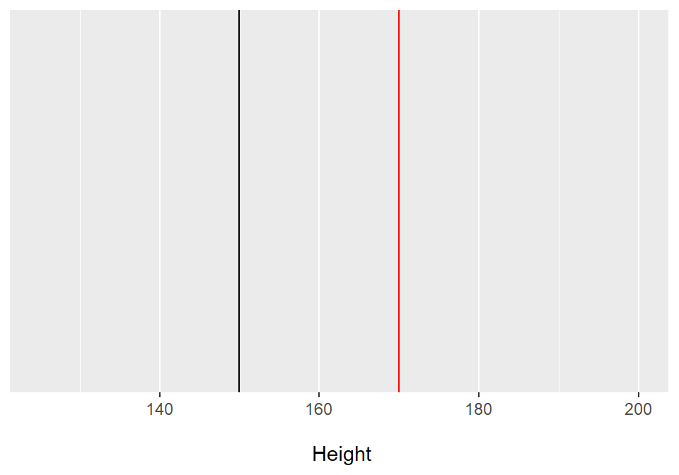
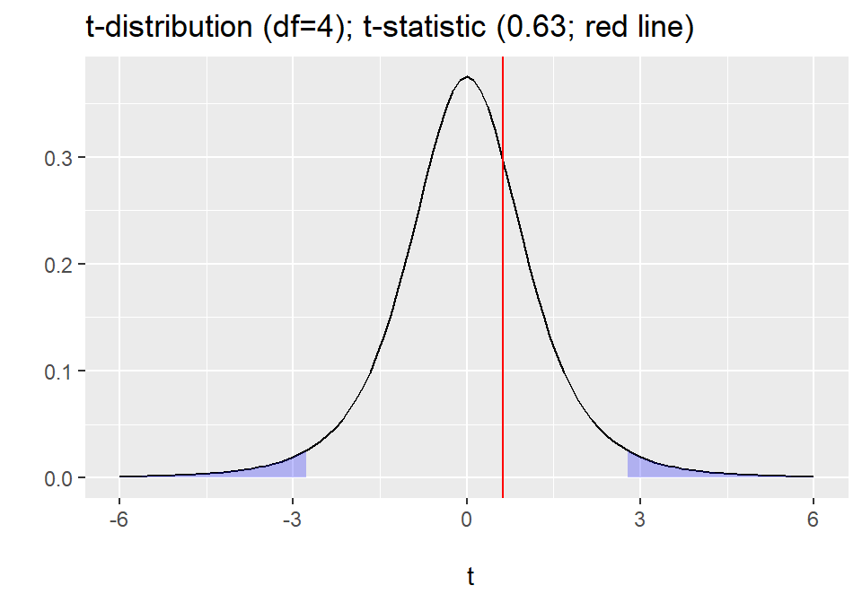
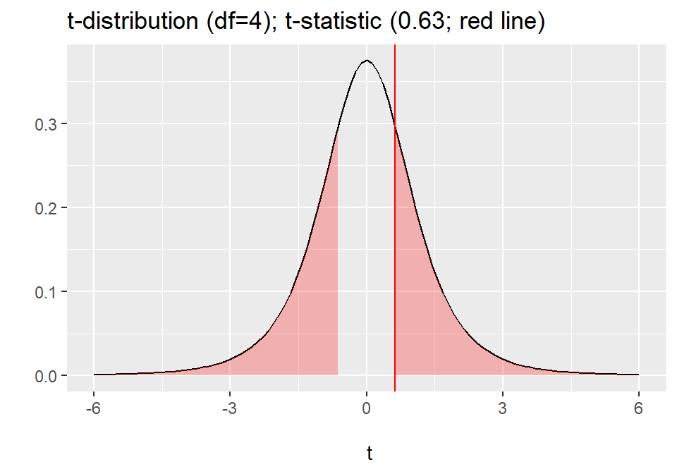

Lecture 16: One-Sample t-test
Data Analysis for Psychology in R 1
Tom Booth
Today
- Introduce the three types of \(t\)-test:
- Discuss in detail one-sample \(t\)-tests
- When to use
- Tested hypotheses
- Calculation
- Doing in R
- Write up
Learning objectives
- Understand when to use a one sample \(t\)-test
- Understand the null hypothesis for a one sample \(t\)-test
- Understand how to calculate the test statistic
- Know how to conduct the test in R
Purpose
- \(t\)-tests (generally) concern testing the difference between two means.
- One-sample \(t\)-tests compare the mean in a sample to a known mean .
- Independent \(t\)-tests compare the means of two independent samples.
- Paired sample \(t\)-tests compare the mean from a single sample at two points in time (repeated measurements)
Data Requirements: One-sample t-test
- A continuous variable.
- Remember we are calculating means.
- A known mean that we wish to compare our sample to.
- A sample of data from which we calculate the sample mean.
Hypotheses
- We are comparing a single sample mean \(\mu_1\) to a known mean \(\mu\)
\[
H_0: \mu = \mu_1
\]
- Note this is identical to saying:
\[
H_0: \mu - \mu_1 = 0
\]
Alternative Hypotheses
\[
\begin{matrix}
H_0: \mu = \mu_1 \\
H_1: \mu \neq \mu_1
\end{matrix}
\]
\[
\begin{matrix}
H_0: \mu = \mu_1 \\
H_1: \mu < \mu_1 \\
H_1: \mu > \mu_1
\end{matrix}
\]
Are these means different?

Differences in means
- Why can we not tell whether they are different or not?
- What else might we want to know in order to know whether not the group means could be thought of as coming from the same distribution?
t-statistic
- Recall when talking about hypothesis testing:
- We calculate a test statistic that represents our question.
- We compare our sample value to the sampling distribution under the null
- Here the test statistic is a \(t\)-statistic.
t-statistic
\[
t = \frac{\bar{x} - \mu}{\frac{s}{\sqrt{N}}}
\]
- where
- \(s\) = sample estimated standard deviation of \(x\)
- \(N\) = sample size
- The numerator = a difference is means
- The denominator = a estimate of variability
- \(t\) = a standardized difference in means.
And breath
- Example: Suppose I want to know whether the retirement age of Professors in my department is the same as the national average.
- The national average age of retirement for Prof’s 65.
- So I look at the age of the last five Prof’s that have retired at Edinburgh and compare against this value.
Data
# A tibble: 5 x 2
ID Age
<chr> <dbl>
1 Prof1 40
2 Prof2 70
3 Prof3 85
4 Prof4 80
5 Prof5 75
Hypotheses
- Let’s say I am new to the department and a priori have no idea of the ages they retired.
- So I specify a two-tailed hypothesis with \(\alpha\) = 0.05.
- So I am simply asking, does my mean differ from the known mean.
Calculation
\[
t = \frac{\bar{x} - \mu}{\frac{s}{\sqrt{N}}}
\]
- Steps to calculate \(t\):
- Calculate the sample mean (\(\bar{x}\)).
- Calculate the sample standard deviation (\(s\)).
- Check I know my N.
- Calculate the standard error of the mean (\(\frac{s}{\sqrt{N}}\)).
- Use all this to calculate t.
Calculation
# A tibble: 1 x 5
PopMean Mean SD N SE
<dbl> <dbl> <dbl> <int> <dbl>
1 65 70 17.7 5 7.91
\[
t = \frac{\bar{x} - \mu}{\frac{s}{\sqrt{N}}} = \frac{70-65}{\frac{17.7}{\sqrt{5}}} = \frac{5}{7.91} = 0.63
\]
Is our test significant?
- The sampling distribution for \(t\)-statistics is a \(t\)-distribution.
- The t-distribution is a continuous probability distribution very similar to the normal distribution.
- Key parameter = degrees of freedom (df)
- df are a function of N.
- As N increases (and thus as df increases), the t-distribution approaches a normal distribution.
- For a one sample \(t\)-test, we compare our test statistic to a \(t\)-distribution with N-1 df.
Is our test significant?
- So we have all the pieces we need:
- Degrees of freedom = N-1 = 5-1 = 4
- We have our t-statistic (0.63)
- Hypothesis to test (two-tailed)
- \(\alpha\) level (0.05).
- So now all we need is the critical value from the associated \(t\)-distribution in order to make our decision.
Is our test significant?

# A tibble: 1 x 2
LowerCrit UpperCrit
<dbl> <dbl>
1 -2.78 2.78
Is our test significant?
- So our critical value is 2.78
- Our t-statistic is less than this, 0.63.
- So we fail to reject the null hypothesis.
- t(4)=0.63, p > .05, two-tailed.
Exact p-values

# A tibble: 1 x 3
LowerCrit UpperCrit Exactp
<dbl> <dbl> <dbl>
1 -2.78 2.78 0.56
Write up
A one-sample t-test was conducted in order to determine if a statistically significant (\(\alpha\)=.05) mean difference existed between the average retirement age of Professors, and the age at retirement of a sample of 5 psychology Professors. The sample scored higher (Mean=70, SD=17.68) than the population (Mean = 65), however the difference was not statistically significant (t(4)=0.63, p > .05, two-tailed).
Assumptions
- As noted above, we have some requirements of the data:
- But we also have some additional model assumptions for the test to be valid.
- The data are normally distributed.
- The data are an independent random sample.
- we can not directly test.
- we can test using a QQplot, histograms and a Shapiro-Wilks Test.
Tasks for this week…
- Catch up any tasks from previous weeks.
- Quiz 16: Probability distributions and hypothesis testing
- Today at 17:00.
- Close Monday 3rd at 17:00